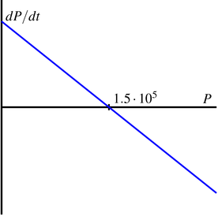
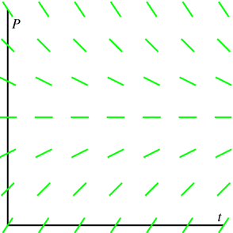
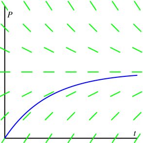

Section7.5Modeling with differential equations¶ permalink
{In this section, we strive to understand the ideas generated by the following important questions:
How can we use differential equations to describe
phenomena in the world around us?
How can we use differential equations to better understand these
phenomena?
}
Subsection7.5.1Introduction
In our work to date, we have seen several ways that
differential equations arise in the natural world, from the growth of
a population to the temperature of a cup of coffee. In this section,
we will look more closely at how differential equations give us a
natural way to describe various phenoma. As we'll see, the key is to
focus on understanding the different factors that cause a quantity to
change.
Preview Activity
Any time that the rate of change of a quantity is related to the amount of a quantity, a differential equation naturally arises. In the following two problems, we see two such scenarios; for each, we want to develop a differential equation whose solution is the quantity of interest.
Suppose you have a bank account in which money grows at an
annual rate of 3%.
If you have $10,000 in the account, at what rate is your
money growing?
Suppose that you are also withdrawing money from the account
at $1,000 per year. What is the rate of change in the amount
of money in the account? What are the units on this rate of change?
Suppose that a water tank holds 100 gallons and that a salty
solution, which contains 20 grams of salt in every gallon, enters the
tank at 2 gallons per minute.
How much salt enters the tank each minute?
Suppose that initially there are 300 grams of salt in the tank. How
much salt is in each gallon at this point in time?
Finally, suppose that evenly mixed solution is pumped out of the tank at the
rate of 2 gallons per minute. How much salt leaves the tank
each minute?
What is the total rate of change in the amount of salt in
the tank?
Subsection7.5.2Developing a differential equation
Preview activity demonstrates the kind of thinking we will be
doing in this section. In each of the two examples we considered, there is a
quantity, such as the amount of money in the bank account or the
amount of salt in the tank, that is changing due to several factors.
The governing differential equation results from the total rate of change being the difference between the rate of
increase and the rate of decrease.
In the Great Lakes region, rivers flowing into the lakes carry a great
deal of pollution in the form of small pieces of plastic averaging 1
millimeter in diameter. In order to understand how the amount of
plastic in Lake Michigan is changing, construct a model for how this type pollution has built up in the lake.
Solution.
First, some basic facts about Lake Michigan.
The volume of the lake is
\(5\cdot10^{12}\) cubic meters.
Water flows into the lake at a rate of
\(5\cdot10^{10}\) cubic meters per year. It flows out of the lake
at the same rate.
Each cubic meter flowing
into the lake contains roughly \(3\cdot10^{-8}\) cubic meters of
plastic pollution.
Let's denote the amount of pollution in the lake by \(P(t)\), where \(P\)
is measured in cubic meters of plastic and \(t\) in years. Our goal
is to describe the rate of change of this function; in other
words, we want to develop a differential equation describing \(P(t)\).
First, we will measure how \(P(t)\) increases due to pollution flowing
into the lake. We know that \(5\cdot10^{10}\) cubic meters of water
enters the lake every year and each cubic meter of water contains
\(3\cdot10^{-8}\) cubic meters of pollution. Therefore, pollution
enters the lake at the rate of
\[
\left(5\cdot 10^{10} \frac{m^3 \mbox{\ water} }{\mbox{year} }\right) \cdot \left(3\cdot10^{-8} \frac{m^3 \mbox{\ plastic} }{m^3 \mbox{\ water} } \right) = 1.5\cdot 10^3\quad
\mbox{cubic m of plastic per year} .
\]
Second, we will measure how \(P(t)\) decreases due to pollution flowing
out of the lake. If the total amount of pollution is \(P\) cubic
meters and the volume of Lake Michigan is \(5\cdot 10^{12}\) cubic
meters, then the concentration of plastic pollution in Lake Michigan is
\[
\frac{P}{5\cdot10^{12}} \quad \mbox{cubic meters of plastic per cubic meter of water} .
\]
Since \(5\cdot10^{10}\) cubic meters of water flow out each year 1 and we assume that each cubic meter of water that flows out carries with it the plastic pollution it contains, then
the plastic pollution leaves the lake at the rate of
The total rate of change of \(P\) is thus the difference between the rate at which
pollution enters the lake minus the rate at which pollution leaves the
lake; that is,
We have now found a differential equation that describes the rate
at which the amount of pollution is changing. To better understand the
behavior of \(P(t)\), we now apply some
of the techniques we have recently developed.
Since this is an autonomous differential equation, we can sketch
\(dP/dt\) as a function of \(P\) and then construct a slope field, as shown in Figure 7.5.2.
Figure7.5.2Plots of \(\frac{dP}{dt}\) vs. \(P\) and the slope field for the differential equation \(\frac{dP}{dt} = \frac{1}{100}(1.5\cdot10^{5} - P)\).
These plots both show that \(P=1.5\cdot10^5\) is a stable equilibrium. Therefore,
we should expect that the amount of pollution in Lake Michigan will
stabilize near \(1.5\cdot10^5\) cubic meters of pollution.
Next, assuming that there is initially no pollution in the lake, we will
solve the initial value problem
Finally, multiplying both sides by \(-1\) and using the definition of the logarithm, we find that
\begin{equation}
1.5\cdot10^5 - P = C e^{-t/100}.
\label{E_7.5.Ex1C}\tag{7.5.1}\end{equation}
This is a good time to determine the constant \(C\). Since \(P =
0\) when \(t=0\), we have
\[
1.5\cdot 10^5 - 0 = Ce^0 = C.
\]
In other words, \(C=1.5\cdot10^5\).
Using this value of \(C\) in Equation (7.5.1) and solving for \(P\), we arrive at the solution
\[
P(t) = 1.5\cdot10^5(1-e^{-t/100}).
\]
Superimposing the graph of \(P\) on the slope field we saw in Figure 7.5.2, we see, as shown in Figure 7.5.3
Figure7.5.3The solution \(P(t)\) and the slope field for the differential equation \(\frac{dP}{dt} = \frac{1}{100}(1.5\cdot10^{5} - P)\).
We see that, as expected, the amount of plastic pollution stabilizes around
\(1.5\cdot10^5\) cubic meters.
\hspace{5.0in}
There are many important lessons to learn from Example 7.5.1. Foremost is how we can develop a differential equation by thinking about the “total rate = rate in - rate out” model. In addition, we note how we can bring together all of our available understanding (plotting \(\frac{dP}{dt}\) vs. \(P\), creating a slope field, solving the differential equation) to see how the differential equation describes the behavior of a changing quantity.
Of course, we can also explore what happens when certain aspects of the problem change. For instance, let's suppose we are at a time when the plastic pollution entering Lake Michigan has
stabilized at \(1.5\cdot10^5\) cubic meters, and that new legislation is
passed to prevent this type of pollution entering the lake. So, there is no longer any inflow of plastic pollution to the lake. How does the amount of plastic pollution in Lake Michigan now change? For example, how long does it take for the amount of plastic pollution in the lake to halve?
Restarting the problem at time \(t=0\), we now have the modified initial value problem
It is a straightforward and familiar exercise to find that the solution to this equation is \(P(t) = 1.5\cdot10^5
e^{-t/100}\). The time that it takes for half of the pollution to flow
out of the lake is given by \(T\) where \(P(T) = 0.75\cdot10^5\). Thus, we must solve the equation
\[
0.75\cdot10^5 = 1.5\cdot10^5e^{-T/100},
\]
or
\[
\frac12 = e^{-T/100}.
\]
It follows that
\[
T = -100\,\ln\left(\frac12\right) \approx 69.3 \quad\mbox{years.}
\]
In the upcoming activities, we explore some other natural settings in which differential equation model changing quantities.
Suppose you have a bank account that grows by 5% every year. Let \(A(t)\) be the amount of money in the account in year \(t\).
What is the rate of change of \(A\) with respect to \(t\)?
Suppose that you are also withdrawing $10,000 per year. Write
a differential equation that expresses the total rate of change of
\(A\).
Sketch a slope field for this differential equation, find any
equilibrium solutions, and identify them as either stable or
unstable. Write a sentence or two that describes the significance
of the stability of the equilibrium solution.
Suppose that you initially deposit $100,000 into the account. How
long does it take for you to deplete the account?
What is the smallest amount of money you would need to have in
the account to guarantee that you never deplete the money in the
account?
If your initial deposit is $300,000, how much could you
withdraw every year without depleting the account?
A dose of morphine is
absorbed from the bloodstream of a patient at a rate
proportional to the amount in the bloodstream.
Write a differential equation for \(M(t)\), the amount of
morphine in the patient's bloodstream, using \(k\) as the
constant proportionality.
Assuming that the initial dose of morphine is \(M_0\),
solve the initial value problem to find \(M(t)\). Use the
fact that the half-life for the absorption of morphine is
two hours to find the constant \(k\).
Suppose that a patient is given morphine intraveneously
at the rate of 3 milligrams per hour. Write a differential
equation that combines the intraveneous administration of
morphine with the body's natural absorption.
Find any equilibrium solutions and determine their
stability.
Assuming that there is initially no morphine in the
patient's bloodstream, solve the initial value problem to
determine \(M(t)\). What happens to \(M(t)\) after a very long time?
To what rate should a doctor reduce the
intraveneous rate so that there is eventually 7 milligrams
of morphine in the patient's bloodstream?
\item Differential equations arise in a situation when we understand
how various factors cause a quantity to change.
\item We may use the tools we have developed so far — slope
fields, Euler's methods, and our method for solving separable
equations — to understand a quantity described by a differential
equation.
\hrulefill
\begin{exercises}
\item Congratulations, you just won the lottery! In one option
presented to you, you will be paid one million dollars a year for
the next 25 years. You can deposit this money in an account that
will earn 5% each year.
Set up a differential equation that describes the rate of
change in the amount of money in the account. Two factors cause
the amount to grow — first, you are depositing one millon dollars
per year and second, you are earning 5% interest.
If there is no amount of money in the account when you open
it, how much money will you have in the account after 25 years?
The second option presented to you is to take a lump sum of 10
million dollars, which you will deposit into a similar account. How
much money will you have in that account after 25 years?
Do you prefer the first or second option? Explain your thinking.
At what time does the amount of money in the account under the
first option overtake the amount of money in the account under the
second option?
\item When a skydiver jumps from a plane, gravity causes
her downward velocity to increase at the rate of \(g\approx 9.8\)
meters per second squared. At the same time, wind resistance
causes her velocity to decrease at a rate proportional to the
velocity.
Using \(k\) to represent the constant of proportionality,
write a differential equation that describes the rate of change
of the skydiver's velocity.
Find any equilibrium solutions and decide whether they are
stable or unstable. Your result should depend on \(k\).
Suppose that the initial velocity is zero. Find the
velocity \(v(t)\).
A typical terminal velocity for a skydiver falling face
down is 54 meters per second. What is the value of \(k\) for
this skydiver?
How long does it take to reach 50% of the terminal
velocity?
\item During the first few years of life, the rate at which a baby
gains weight is proportional to the reciprocal of its weight.
Express this fact as a differential equation.
Suppose that a baby weighs 8 pounds at birth and 9 pounds
one month later. How much will he weigh at one year?
Do you think this is a realistic model for a long time?
\item Suppose that you have a water tank that holds 100 gallons of water.
A briny solution, which contains 20 grams of salt per gallon, enters
the tank at the rate of 3 gallons per minute.
At the same time, the solution is well mixed, and water is pumped
out of the tank at the rate of 3 gallons per minute.
Since 3 gallons enters the tank every minute and 3 gallons
leaves every minute, what can you conclude about the volume of water
in the tank.
How many grams of salt enters the tank every minute?
Suppose that \(S(t)\) denotes the number of grams of salt in the
tank in minute \(t\). How many grams are there in each gallon in
minute \(t\)?
Since water leaves the tank at 3 gallons per minute, how many
grams of salt leave the tank each minute?
Write a differential equation that expresses the total rate of
change of \(S\).
Identify any equilibrium solutions and determine whether they
are stable or unstable.
Suppose that there is initially no salt in the tank. Find the
amount of salt \(S(t)\) in minute \(t\).
What happens to \(S(t)\) after a very long time? Explain how you
could have predicted this only knowing how much salt there is in
each gallon of the
briny solution that enters the tank.